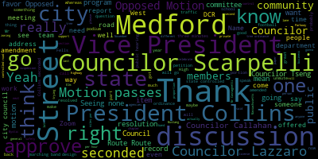
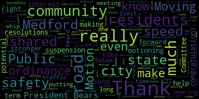
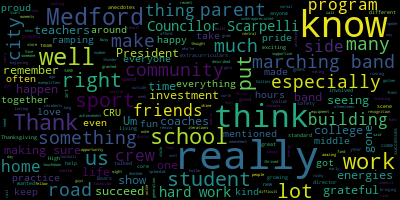
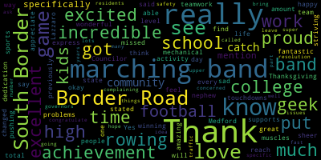
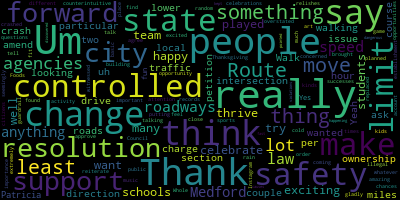

[Vardabedian]: Test 1-2, test 1-2.
[Bears]: Everybody's good. Sarah's good. You good? 23rd regular meeting, Medford City Council, December 3rd, 2024. Mr. Clerk, please call the roll.
[Hurtubise]: Councilor Callahan. Vice President Collins. Councilor Lazzaro. Councilor Leming.
[Bears]: Councilor Leming is absent.
[Hurtubise]: Thank you. Councilor Scarpelli. Present. Councilor Tseng. President Bears.
[Bears]: Present, six present, one absent. The meeting is called to order. Please rise to salute the flag. Thank you. Announcements, accolades, remembrances, reports and records. 24-496 offered by Vice President Collins, Councilor Scarpelli and President Bears. Be it resolved by the Medford City Council that we acknowledge and celebrate the Medford High School varsity rowing team on their recent achievement of being crowned state champions at the Massachusetts Public School Rowing Association. We congratulate all members and coaches of the rowing team for their hard work, teamwork, and impressive achievement. I will go to Vice President Collins and then Councilor Scarpelli.
[Collins]: Thank you so much, President Bears. I'm excited to be able to say congratulations to you all in person, state champs. Wow. That is really amazing. Thank you so much for all of your hard work. I lived with a rower during college and they have to be the fittest athletes. I can't believe how early you guys must wake up. So just our heartiest congratulations on this really major achievement and for doing Medford proud. Thank you.
[Scarpelli]: Thank you, Mr. President. And thank you for my fellow colleagues to add me to this resolution. I think it speaks volumes for me as a school team member. I was part of that group that was first initiated with the thought of, hey, there's a program that we really want to start here in Medford. It's called Crew. And we didn't have a slip. We didn't have any docks. We didn't have a boathouse. We didn't have anything. And we were borrowing skulls from different different colleges and they were donating them to us. And it really started so and you know, it's just a fad. What I what you realize is that committed young people really drove this when we first started it to where we are today. And I think it's so amazing that we have state champions in front of us right now with committed coaches and kids looking to go to the next level, colleges, universities, and participate in crew at that level. I think it's just amazing feet and see where we've gone. And you know what, I'll say it here. I've talked to a bunch of parents that I work in recreation and one of the, the most attractive pieces of our puzzle in Somerville is our boathouse. And what we can do, we have summer programs using rowing crew and the different avenues of community that crew really brings to Medford. And I'll say it publicly, I would love to see the mayor use our CPA money to look down the line to building us a true boathouse over at home else stadium I think that, to me, would be full circle and look at something that you know we have an avenue, we have a funding mechanism in place. Now all we need is a reason for it. And you've given us this reason tenfold. So I want to congratulate all of you coaches. I know that Mr. Maloney was in the forefront years ago when people told him that this wasn't going to happen. And I believe if maybe some people remember, when we first started, they put a couple of rowing machines in what's now the boys locker basketball locker room in the gym. Is it still there do you guys still use that area. It was like that's all we had. We had four, and people were just taking turns, jumping in so we've gone a long way so I commend all of you for pushing this forward. And it's amazing when you listen to other people from different communities, when they talk about What Medford crew is doing at the regard is and what they're doing at different events, and how you're seeing sportsmanship and and pride in community and this is what it's all about, you know, in. Traditionally, it was what hockey, football, baseball, right? Now you're seeing lifetime sports where you're seeing people using crew to go to the next level in academia, and then taking that to the next level and really promoting something that's really healthy and positive in our community. So I know I'm winded, but I just wanted to I had the vision when this came forth of when this started, when I was on the school committee and seeing where it is today, just amazing. I like so much pride with all the medals on our athletes and coaches standing there stoically and I appreciate all this hard work. So thank you and congratulations.
[Bears]: Thank you, Councilor Starkelli. Councilor say, thank you.
[Tseng]: Um, Councilor Scarpelli spoke to the beginning of the crew program. Um, I was there when it was really ramping up really building up. Um, and I know that for most of my friends that crew. put so many hours into it woke up so early, so many hours after school training and gym outside of practice as well. I know how much work it takes. It's something that I can't I can't do myself so hats off to you all. I also know, looking at all my friends and seeing their love for CRU, that CRU is home for so many people. And I'm just so happy that a program that so many of our students call home has gotten this really splendid, really, really amazing achievement and recognition of the hard work and the community that you all have built together. You know, I think as Councilor Scarpelli mentioned, as Vice President Collins mentioned, this is really bringing pride to our city. This is something our city can unite around, can be proud of, and you've made it happen. And I think for that, all of us here on this side of the rail are very, very, very grateful for that hard work that you've put into everything. know, Councilor Scarpelli kind of stole my thunder when he said, you know, you got the sports that, you know, I think a generation ago we would have thought were, you know, the normal listing of sports. And then you got crew, which, you know, is something so, I think, central to life in Medford, especially with the Mystic in the middle, running through the middle of our city, that I think our residents, our students often take for granted. But having gone to college and grad school, you start to realize that not everyone has this opportunity. And for you guys to really make it shine and to really show everyone how worth it it is to have a program like this, I think that's really stellar. I have a lot of friends who've gone on to do crew in college and really thrived there. And I hope that you carry that energy with you, even when life gets really busy, to find time to do it, even for fun. It might be for a college sport, but to really keep up with it and keep making all of us proud. I would be really remiss if I didn't thank the coaches for their hard work that they put into this as well. as well as the parents, because I know, you know, I had parents that really were very, very supportive of my extracurriculars. I know there's a lot of work put into it, a lot of work making sure that you can afford what you do, making sure that you can get to your practice, making sure that you have everything you need to succeed. And I think oftentimes that kind of, that work from the parent's side has gone underappreciated. So I wanted to thank you all too. Thank you.
[Scarpelli]: Councilor Cullohan.
[Callahan]: mechanical problems. Thank you for being here. I have a nephew who got into rowing in high school that all through college had changed his life, the sheer amount of time and dedication and, you know, muscles that you got to put in to be, to do rowing and teamwork. I think it's an incredible achievement for you to reach the state level. It is an incredible achievement for Medford. And I'm just so proud. I'm excited for you to be here and thanks each and every one of you for all the work that you do.
[Bears]: Thank you, Councilor Callahan. A long, long time ago, I was on the crew team for a season. Councilor Scarpelli was like a freshman on the school committee at the time. But I was much better on the ERG machine than I was on the water. I caught a lot of crabs. But yeah, I mean, it's just amazing to see how far the program has come. We were on the Malden River running out of that gentle giant tent and it was really new at the time. And it's just really great to see what you've accomplished. So thank you so much for being here. Parents, students, coaches, we're really, really excited to celebrate you. And I know this is your second night in this room in a row. So we'll get you out of here real soon. Thank you so much for being here. Open it up, if anyone from the team wants to say anything, you're welcome to come to the podium and say something if you want, share your story.
[Campbell]: He's got the trophy. Hello, I'm Scott Campbell. I'm a senior at Medford High School and a captain of the Medford rowing team. When I first came on the team freshman year, I would have been shocked if you told me that we would have been getting a trophy like this. We've come a really long way, very quickly. And I would really like to thank the coaches, thank the captains, and thank the support from the city. If any of you council members want to come out and do some rowing, let us know and we'll be able to get that arranged. So yeah, thank you.
[Bears]: Thank you so much. All right, if there's no further discussion, we'd love to take a photo with you. Feel free to come up and fill in the center of the chamber here. If you can make it around, we've got a lot of stuff in here. Is there a motion on the floor? Vice President Collins.
[Collins]: Motion to take resolutions under suspension.
[Bears]: We need to approve this first.
[Collins]: Oh, motion to approve.
[Bears]: On the motion to approve the resolution by Council, Vice President Collins, seconded by Councilor Callahan. All those in favor? Aye. Opposed? Motion passes. Councilor Collins.
[Collins]: Motion to take resolutions under suspension.
[Bears]: On the motion to take resolutions under suspension by Councilor Collins, seconded by Councilor Callahan. All those in favor? Opposed? Motion passes. So you have three resolutions under suspension tonight. Resolution one offered by the president, vice president, Councilor Scarpelli, be it resolved by the city council that we congratulate the Medford Mustang football team on beating Malden in the Thanksgiving game and winning the first GBL championship for the city since 1985. Any discussion on that item? All right, Councilor Lazzaro.
[Lazzaro]: Yes, that was a very fun Thanksgiving game in the rain, and it was cold, and it was amazing. They played, the team played so, so well. It was really exciting. And I'm so happy to celebrate the team and gladly support that resolution. Thank you for putting it forward.
[Bears]: Thank you, Councilor Lazzaro. Councilor Tseng.
[Tseng]: Thank you. A number of us from this council went together. It was a great day, a great way to spend a rainy Thanksgiving. It's always really exciting to see your home team do well, especially as someone who, you know, I've been involved in Medford High School, the Medford High School scene for such a long time that I can remember, you know, more difficult times. But you know what, I think this really exemplifies how much work we, the coaches have put into this program, how much work our teachers and the school, public schools have put into our sports here in Medford, that Medford sports is now on the rise. One of the most exciting moments of Thanksgiving week was seeing a touchdown happen right in front of us. And that's something, you know, we can really hoot and holler about. So I'm really pumped for the football team, really pumped for what Medford Sports has in store for the seasons to come, and really grateful, again, for the hard work of the parents, the students, the coaches as well.
[Bears]: I'm gonna go to Councilor Callahan, then Councilor Scarpelli.
[Callahan]: Thanks so much. Yes, it was an excellent time to see a game on Thanksgiving day. It was fantastic. Really great to see some touchdowns. I will say as a total band geek that I was sad that I missed the marching band, but it was okay to see a wonderful winning game and an excellent game of football. Thank you so much.
[Bears]: And our next resolution is about the marching band. So we'll get to talk about them too. Councilor Scarpelli.
[Scarpelli]: Thank you, Mr. President. It truly was the victory, the first time greater Boston League champion since the early 90s. First time announced tonight, first time we've had a greater Boston League MVP and Justin Marino. So many kids now coach Curley and his coaching staff ascending off to play at the next level that you have, and you're talking about a group of kids that without football wouldn't have an opportunity to get to the next level. That's what's amazing. What I really want to stress is how impressed I am with the football program for what they do for the community. If you see the wins and Thanksgiving, that's great, touchdowns, and everybody's happy about that. What I find more amazing is what they did the week before when they went to the shelter and they They prepared a couple of the, what am I thinking, Zach? The food, it wasn't the meals, they were doing the different community centers. Yeah, so they really, the pantry, excuse me, thank you for helping me with that. But they were setting up the food pantries and helping with stock and share and present that to the community members. You'll see them this winter, delivering, shoveling seniors out. So what you're seeing right now is a true champion in the sense that, forget about the wins and losses. Coach for 32 years, you seldom remember those truly what they're going to remember is what they did as a team and as a family as being part of a community and really giving back to the community so I congratulate coach curly. Chris Murphy, who's the President of the Mustang. football program and what they do for our community and give them back. And I would love to invite them to our next meeting, if we can, Mr. President, to them and our next guests and the band and really celebrate what they've done, both on the field and off. I think it's equally important. So thank you.
[Bears]: Thank you, Councilor Scarpelli. Yeah, and I was hoping we'll reach out, we'll figure out if it's next meeting or maybe in January, which which one we can get people here for but I also just wanted to. really appreciate what the program means year round for students and keeping them engaged in the community and involved, not just in football activities, but community activities, community service, and academic success. It really is something that not just the football program, the crew team, the band, every program that we have in our city, gives a young person an opportunity to be more involved in their community, or maybe helps make sure they stay involved in their community and stay on track and I think that that is really the great benefit of the vibrant. activities that we have arts, sports, music, all of it. And also, I do want to ask Coach Curley, how he's going to replace the GBL MVP and I think now all time Mustang football scoring leader and Justin Marino, it's pretty impressive. So, you know, we can have a little sports fun too. It's got a brother in the fifth grade. It's a lot of pressure. But yeah. All right. Any further discussion on this motion as amended by Councilor Scarpelli to invite representatives from the team or the full team if they can all make it to a future meeting? Seeing none on the motion of Councilor Collins to approve as amended seconded by Councilor Tseng, all those in favor? Opposed? Motion passes. second resolution under suspension, be it resolved that we celebrate and congratulate our Medford Mustang marching band on their NESBA championship. And we'll say that that's from Councilor Zahra Callahan. And just wanted to introduce that our marching band also has seen, I was in the marching band and I sat through I think four consecutive four or five, I think it might've been there even longer than that, consecutive Thanksgiving losses, but it was still awesome. The program was still doing community work. Cheer Squad was doing great and we were doing well, but it was at a time, Councilor Scarpelli knows we've talked about it, of cuts where we lost our marching director. We had one person doing the band. And we've seen this really vibrant resurgence over the last 10 years. For better, I mean, thankfully from, but from the parents and from private fundraising to support the band as someone who thinks that it would be great to have the public funds back in those programs that that. All that extra work doesn't go unnoticed, even though I don't think that needs to happen and I think it can be helpful. I'd love to see more support but our band has really seen that resurgence to in recent years winning multiple NSBA championships. And, you know, my senior year we didn't have we didn't march. You know that that's how bad it had gotten we had a field show but we stood in place and we performed it or we performed it from the stands and now you have a color guard, and you have percussion and you have electronically amplified instruments and all these things and new uniforms, all of these things that we didn't have. Yeah, and they're doing the tree and wreath sale to support the Medford Mustang Marching Band as well. So thanks to everyone for letting me go on first on this one, but it is a real passion of mine. I want to celebrate them too and hope that someone will amend to invite them as well. I'm going to go to Councilor Tseng and then Councilor Zahra.
[Tseng]: Thank you. I'd be happy to make that amendment. I think my fellow councilors know how I was I was involved a lot more with the art scene growing up and seeing the marching band through its many iterations, I think. I remember the marching band as President Bears described it. I remember the marching band as it was growing as well with a new band director, with new uniforms, equipment, things really, really ramping up. I think we're the recent successes of the marching band, the year after year successes of the marching band really show, I mean, one thing, right? Like pride to the city. Another thing is the result of community investment into the arts, into building a community for our students where they can really thrive. And the third thing that comes to mind for me especially is just the importance of building a home for our students to have their energies their creative energies their expressive energies channeled into a place where they can feel safe and we're. where when you do that, when you do that, you not only help that child succeed, but you help our city succeed as well. And so I'm really, really grateful for the teachers, for the band directors, for all the parents who make this happen. Because, again, I've seen it from the other side, from the student side, and I know how much work there is there that goes unsaid. I've talked to the teachers after rehearsals are done. you know, it's, they're tired, but they're, they're right on their next lesson plan. I, I've talked to, I have a lot of friends who are in bands, especially as well, and they're the reason why President Bears and Councilor Scarpelli can, can sing the fight song right on the spot. As they have before.
[Scarpelli]: I'll share, I'll share, I'll share with everybody.
[Tseng]: But, But you know, it goes to show that investments, the investments that we make as a community in our schools, especially in our extracurriculars, which so often fall by the wayside, are so, so important in building a stronger and more thriving community.
[Bears]: Thank you, Councilor Tseng. I'm gonna go to Councilor Lazzaro.
[Lazzaro]: Thank you. I think you can tell how much the City Council relishes an opportunity to talk about our schools. We don't get that many chances, but it's exciting when we have something to celebrate like this. But I do really agree and want to reiterate how important it is for students in our public schools to have opportunities to try different things, find the thing that they fit in with and that they can thrive in, whatever that thing is, if it's sports, if it's music, if it's art, if it's some seemingly random or counterintuitive activity that makes them really happy and makes them feel like they have a place, that's what makes kids thrive. So the importance of these kinds of successes for our students can't be overstated. So I'm just very excited about these resolutions coming forward and these celebrations. So thanks.
[Bears]: Thank you. Go to Councilor Callahan.
[Callahan]: Thank you. As previously stated, I am a band geek. I did marching band all through high school and college. I love the way that the marching band supports the football team and the sports. You know, all of the work that people put in. I really appreciate what counselor Lazzaro said about kids being able to find an activity and a community in which they feel they can really be themselves and express themselves. And I'm so happy that we have not just a marching band, but an amazing marching band that is, you know, really striving and pushing itself. So I'm really excited and I congratulate them. And I'm super proud of what they bring to our community. Thanks.
[Bears]: Thank you, Councilor Callahan. And I do just want to note part of question eight was about trying to expand access to these programs, especially for kids who are taking the vocational programs, supporting coaches and trying to get their salaries up as part of negotiations and investing in not just the core academics, but the access to programs like our football team and our marching band and our crew team and others. And that is a priority, you know, I think we've all talked about just what Councilor Zara said reminded me, it's important to invest in all of that. That's something that we're going to be, well, the school committee is going to be doing over the next several months as they work on their budget. Any further discussion on this item? Seeing none on the motion to approve by Vice President Collins, seconded by Councilor Callahan on the paper as amended by Councilor Tseng to invite our marching band to a future meeting. All those in favor? Aye. Opposed? Motion passes. On the third paper under suspension, we did receive from the mayor a donation acceptance. Dear President Bears and members of the city council, I respectfully request and recommend that your honorable body approves under general law, chapter 44, section 53A, a donation by Andrew P. Castagnettititititititititititititititititititititititititititititititititititititititititititititititititi of $100 and zero cents to be used to install lights on the Mystic River footbridge in memory of Lawrence Larry Lepore, our dearly departed city messenger. Is there any further discussion on that item? On the motion to approve by Councilor Scarpelli, seconded by Council Vice President Collins. All those in favor? Opposed? Motion passes. Records. The records of the meeting of November 12th, 2024 were passed to Vice President Collins. Vice President Collins, how did you find those records? Oh, sorry. Councilor Collins found them in order and moves for approval. On the motion of Councilor Collins, seconded by Councilor Tseng, all those in favor? Opposed? Motion passes. On the records of the meeting of November 19th, 2024, passed to Councilor Lazzaro. Councilor Lazzaro, how did you find those records?
[Lazzaro]: I found the records in order and I move to approve.
[Bears]: On the motion of Councilor Lazzaro to approve, seconded by. Seconded by Councilor Callahan. All those in favor? Opposed? Motion passes. 19-070 offered by Council President Bears, Committee of the Whole report, November 20th, 2024, report to follow. This was, we took back up the tree ordinances. There are three parts of that ordinance, a tree committee ordinance, a public tree ordinance, and a private tree ordinance. Tree committee and public tree ordinance are going to, there's going to be a meeting with city staff and advocates and some members of the council to discuss further that ordinance. Private tree ordinance is being reviewed by the zoning team since it's a zoning ordinance. So that's probably going to either get incorporated into our zoning updates project or at least be aligned with that project. Any discussion on the report. Councilor Scarpelli.
[Scarpelli]: I had some phone calls after and I think that the biggest concern was the private process of tree removal. Residents were really concerned with their freedoms and what they have control on their properties. And I think that at the time KP law did say that that could be viewed as taking. So I know that that's something that will be reviewed. And I think that as people ask me, this is the process, it's gonna be vetted through the process and we'll get a clearer understanding as we move forward. So thank you for that, Mr. President.
[Bears]: Thank you, councilor Scarpelli. Is there a motion to approve the committee report? So on the motion of councilor saying to approve the committee report, seconded by? Seconded by Councilor Callahan. All those in favor? Opposed? Motion passes. Refer to committee for further discussion. 24-502 offered by Vice President Collins. Be it resolved that the Public Health and Community Safety Committee meet to discuss technical amendments to the Community Control over Public Surveillance Ordinance. Vice President Collins.
[Collins]: Thank you, President Bears. So I'm motioning. Motioning. Is that right? Moving. Moving. God, I knew that didn't sound right. Geez. Anyway, I am moving to send the existing Community Control of Public Surveillance Ordinance, which was passed last term, to the Public Health and Community Safety Committee. This ordinance was crafted and collaborated on in the previous term because the city, the council, and residents had a shared concern and a shared interest in the civil liberties of residents, transparency in our governmental decisions, and a shared interest in making sure that our very precious city dollars are spent on true public safety and not on expensive gadgets and softwares that enrich corporations more than they actually help communities and residents. So to that end, some residents have identified potential changes that we could make to this rather new ordinance that would make it even stronger and even more in line with those shared goals. So I look forward to reviewing those comments, perhaps making some tweaks and having this discussion in committee where we can really get into the details and make this even stronger than it already is. Thank you.
[Bears]: Thank you on the motion to refer this paper 24-502 for discussion by Vice President Collins, seconded by Councilor Lazzaro. Is there any further discussion? Seeing none, is there any discussion by members of the public? Seeing none, all those in favor?
[Collins]: Aye.
[Bears]: Opposed? Motion passes. Hearings 24-490 offered by the City Council public hearing proposed amendments to the Medford zoning ordinance chapter 94. I'm now declaring the public hearing open. This is a hearing notice regarding the Mystic Avenue Corridor District. We have not received the recommendations of the Community Development Board yet. So general practice is that we would continue this public hearing to a date certain our next regular meeting of December 17th. And at that point, we can review the recommendations of the Community Development Board regarding the Mystic Avenue Corridor District. Is there any discussion? Seeing none, is there anyone who'd like to speak in the public hearing right now? Seeing none, is there a motion? Vice President Collins.
[Collins]: To continue the public hearing to our next regular meeting.
[Bears]: Motion to continue the public hearing to the date certain, December 17th regular meeting. That's the right date, right? That is, yes. That will need a roll call vote. So on the motion of vice-president Collins, seconded by, seconded by councilor Tseng. Mr. Clerk, please call the roll.
[Hurtubise]: Councilor Callahan. Vice-president Collins. Councilor Lazzaro. Councilor Leming is absent. Councilor Scarpelli. Councilor Tseng. President Paris.
[Bears]: Yes, six present, one absent. The motion passes and the public hearing has continued to our December 17th regular meeting. petitions, presentations, and similar papers. 24-504, petition for a common victualer's license, Medford Donuts Cafe, Inc. We have here on record business certificate, petition, fire department sign-off, building department sign-off, health department treasurer, state tax number, workers' compensation form, letter of compliance, and traffic impact. And I will turn this over to Councilor Scarpelli. We do have the petitioner on Zoom.
[Scarpelli]: Thank you, Mr. President. I see, is Mr. Silva here? Yes. Okay. Okay. I believe this is just a carry over from the previous owner who his family had owned it. The Calais family owned the donut shop for many, many years, a fixture in the Mefford community. And I'm so happy that Mr. Silva stepped up and kept this location alive because it is something that I remember when I was a kid. After church, dad would go over to Demet's and pick up the healthy donuts. They weren't the bad ones at the time. But I appreciate the information. Looks like everything, Mr. President, is in order. If I can, I think the only questions we have is, you know, the number of employees, the hours are staying the same, and that would be it on my end, but I don't see anything that would prohibit us to move this forward after my colleagues share any thoughts, so.
[Bears]: Thank you, Councilor Scarpelli. I am attempting to unmute the petitioner. Mr. Silva, I'm gonna click a button and then something should pop up on your screen that'll allow you to speak. I can see you, but I can't unmute you. You have to unmute yourself when I ask. Are you seeing a pop-up on your screen? If you could give me a thumbs up or down if you see it when I press this button. So if you click the unmute button on that pop-up, that should allow you to speak.
[Scarpelli]: I think we just, honestly, if we have any other questions, this is a pretty straightforward petition. Everything is in order, Mr. President. I would move approval. If Mr. Silva can add anything, maybe reach out to the clerk for a next meeting, but I don't want to hold this up any longer if it's something that's just technical.
[Bears]: Do the councilors have any other questions on this item? Councilor Lazzaro.
[Lazzaro]: I would just have some basic questions about if there are any changes planned to the building or the establishment, or if it's just a change of ownership.
[Scarpelli]: It is a change of ownership. Seems like just a change of ownership.
[Lazzaro]: Yeah, just a change of ownership. Yeah.
[Bears]: Okay. On the motion of Councilor Scarpelli to approve, and we can send any questions through the clerk to the petitioner if needed. Is there a second on the motion? Seconded by Councilor Tseng. Any further discussion by members of the Council? Seeing none, is there any discussion by members of the public on this item? Oh boy. Folks don't know City Hall was closed to most of today, at least till noon, because the heat was not working. So another building that needs some TLC for sure.
[Scarpelli]: Should ask for an override.
[Bears]: Maybe a dead exclusion. On the motion, all in favor, or do you want a roll call? We don't have to? Okay, all those in favor? Opposed? Motion passes and the common fixture license is approved. Thank you. Sorry, we couldn't hear from you. 24505 petition for a common victor's license for Bunn's House. We have the petition here, business certificate fee, approval from fire department, building department, health department, treasurer, state tax ID, worker's compensation form, a letter of compliance and police and traffic. And it looks like we also have counsel for the applicant, Mr. Chin on Zoom perhaps, or I saw you come on video. I can ask you to unmute if there's anything you'd like to add, and then I'll go to Councilor Scarpelli. Hello, Councilor. How are you?
[Chen]: Good evening again. Thank you very much for recognizing me. Attorney Russell Chen here for the applicant, Rosen Boston Inc. Looking for a CV license to conduct business at the former Chili Garden location, 41 Riverside Avenue. I am joined, I believe he is there in person, Mr. Guangping Ding, who is the principal of the applicant corporation. Yes, he is a simple change of ownership of this restaurant. Mr. Ding intends to go in and just continue to conduct a similar business that would not be much in the way of renovation that to my knowledge that would take place.
[Bears]: I will go to Councilor Scarpelli.
[Scarpelli]: Just one question to the attorney while we have the hours of operations. Do you continue those with us?
[Chen]: Yes, I'm saying he would like to operate from 11 a.m. to 10 p.m. seven days a week.
[Scarpelli]: Okay, perfect. I know that sometimes when they go outside that I just would like to remind the petitioner that if it's later that that had to go through the process as well. So again, Mr. President, I see everything in order. I'm excited that we don't have an empty storefront and we see a responsible owner coming in and taking over and And like I said, everything's in order. I would move for approval. My colleagues have any comments?
[Bears]: Thank you. On the motion to approve by Councilor Scarpelli, seconded by. Seconded by Councilor Tseng. Any further discussion by members of the Council? Seeing none, is there any discussion by members of the public? Seeing none, I just want to say good luck, congratulations, and we are excited to have you filling the, you know, Chili Garden's been a big community anchor, so we look forward to having you in there and doing your business. So congratulations on the motion to approve. All those in favor? Opposed? Motion passes. Congratulations.
[Chen]: Thank you very much for your support and have a good evening.
[Bears]: All right. Motions, orders, and resolutions. 24-503 offered by Councilor Lazzaro, President Bears, and Vice President Collins. Let me get the full language here. Whereas speed is one of the most important factors in traffic safety and crashes that occur at lower speeds cause less injury. And whereas a pedestrian hit by a car traveling 40 miles per hour has a one in 10 chance of surviving a crash, while a pedestrian hit by a car traveling at 20 miles per hour has a nine in 10 chance of surviving. And whereas Medford has set a citywide speed limit of 25 miles per hour on city controlled streets. and whereas Medford has a high proportion of state-controlled roads, including Mystic Valley and Alewife Brook Parkways, Route 16, Route 28, Route 38, and High Street, Route 60, which are Medford's busiest thoroughfares, connecting Medford, the surrounding towns, and I-93, and passing through residential and commercial areas, impacting the safety of people walking, cycling, taking transit, and driving to school, work, parks, grocery stores, natural spaces, and city squares. excuse me, and whereas Massachusetts general law chapter 90 section 18 allows city councils to petition state agencies to modify the speed limit on a state highway within their geographic boundaries. Now, therefore, be it resolved by the Medford city council that we respect the request and recommend that the Massachusetts department of conservation and recreation, DCR and Massachusetts department of transportation, MassDOT set the speed limit on route 16, route 28, route 38 and route 60 in Medford at 25 miles per hour. Councilor Lazzaro.
[Lazzaro]: Thank you. This is an issue that was brought to my attention by some local concerned citizens who, in particular, we were talking about Route 16 close to the Whole Foods where the guardrail has been crashed into and replaced so many times that it has its own Instagram account. Um, it's, uh, it's while we were walking through that intersection, we witnessed at least two, at least two extremely illegal and dangerous traffic violations that we pointed to, and we were like, like that, like that. It just kept happening. Um, people drive really fast on Route 16 in particular. Um, and then, uh, as I was looking into it, I discovered what the other, that are controlled by state agencies. This causes a lot of complications when we try to increase the safety of our roadways. But, um. I wanted to make a couple of notes on this resolution after looking into it and discussing the matter. Um a couple of these roadways are now under local So we can if we can amend that. Or I'm not sure if we need to amend it really the the mass general law chapter 90 section 18 says that we can basically petition those agencies to change their sections. So really, all we're doing is we're saying DCR, can you lower the speed limit of the roads that you control, mainly route 16 and 38 and 28, I think. are up around 35 miles per hour is the limit. And people do drive faster than that, of course. But it's just like anything, we're not in charge of how people break the laws, we're only in charge of what the laws are. So if we would like to move forward with it, we would say, we would ask these state agencies to change their, those roadways speed limits. And what that does is, lessens the likelihood that a crash would be a fatal crash. And that is the hope. It is a small step, but it is hopefully something in the direction of greater safety. And I wanted to say thank you to Walk Medford, Ellery Klein of Walk Medford. We had a ton of support from the Medford Bike Commission, Emily O'Brien. We had support from Patricia, Senator Patricia Jalen's office, Matt Hartman, her chief of staff. We had a big group of people that did this walking. of that intersection, but we talked a lot about there are a lot of really interested people and, um, traffic safety and just safety of human beings moving through the city is, of course, not I don't think it's very contentious issue. Um so people do want to be safe where they live and work and travel. So this is a this is something that I think can At least move in the direction of achieving that. Thank you.
[Bears]: Thank you. I will go to Councilor Callahan and then Vice President Collins. But just before I do that, it might be worth the amendment being, saying Route 16, Route 28, Route 38, Route 60, and any other streets or highways controlled by state agencies, something like that as an amendment, just to be a catch-all.
[Lazzaro]: sorry, what I do wonder is if we would, if it would behoove us to ever take anything out of it, like we might as well just say anything that's state controlled, ask that the agency is lower the speed limit to 25 miles per hour.
[Bears]: Yeah, because I off the top of my head I'm thinking of South Border Road, Elm Street, Highland Avenue.
[Lazzaro]: Exactly.
[Bears]: And there's a couple of other state, there's a Valley Parkway that's not part of Route 16 by the lakes. I mean, Someone said that I think Medford has the second highest proportion of state-controlled roads after Boston, which is pretty wild, but we do have a lot. And 38 is partially city, partially state. I think 60 is the only one that's all under city control. So I think a catch-all amendment might be worth.
[Lazzaro]: I think that you're right. Rather than eliminating some that are technically city-controlled, to maybe just say any and all state-controlled roads, we petition that they be lowered to 25.
[Bears]: Yep. All right. I'll go to Councilor Callahan and then Vice President Collins.
[Callahan]: Thank you. I love the idea of having a catch all. I was going to ask that we specifically mention South Border Road because there are a number of residents on the upper part of governors who have for many years been complaining about the safety issues. They're really concerned about their kids. You know lots of very fast traffic because of South Border Road. So I hope we can leave some specific mention of things as well as having a catch all and I would love to have South Border Road specifically called out in this resolution. Thanks.
[Bears]: Thank you, Councilor Kelly, and I'll go to Vice President Collins.
[Collins]: Thank you, President Bears. Councilor Lazzaro, thank you so much for putting this forward and to all of the collaborators from the community. I know that we have been hearing from safety advocates in the community for a long time about this, and I'm glad that we're doing this one small step towards a potential solution. I think this one is really simple. You know, we have a 25 mile per hour speed limit on city managed roads for a reason. We struggle to maintain and enforce that speed limit on city roads as it is. I heard a couple speeding complaints from residents twice in the past two days, and that was before the meeting started. And then we heard about more traffic issues on Salem, about the lack of safety on Salem Street as well. So we really need the state's help in creating a culture of safe road speeds here in Medford and around the region, because it's just intuitive, you know, people whip on the roads in Medford, they whip on the state roads, and they bring that speed to the neighborhoods, and it's incredibly dangerous, it's incredibly scary. So I hope that this will send a really clear message to DCR and DOT that Medford wants this. We do not want this fast traffic from these state roads bleeding into the neighborhoods anymore. So thank you so much for putting this together and thank you so much to everybody in the community who's been raising the alarm about this as well for a long time.
[Bears]: Thank you, Vice President Collins. Yeah, as someone who grew up on a state road, Fells Bay West, but has spent many years looking out my driver's side mirror or looking left and right across the street, worried that someone's going to come whipping down Fells Bay West in the one-way section at 45 miles an hour. And they have taken out two of our cars and a tree in that time. And luckily, no people, but that's probably only because there's no crosswalks. And the only thing To our West is 93. There's other parts that are even much more dangerous. I'm a huge supporter of this resolution. I'm also directly experienced what it's like to lose someone in another community, not in Medford to traffic violence so Yeah, it's just important to me. And I have here a suggested amendment in the last sentence, set the speed limit on any street, highway, or portion of a street or highway controlled by a state agency, including but not limited to Route 16, Route 28, Route 38, Route 60, South Border Road, Elm Street, and Highland Ave in Medford at 25 miles per hour. Sound good? You'll make that amendment? I wrote it down. On the motion of Councilor Lazzaro to approve the resolution as amended, seconded by Councilor Callahan, is there any further discussion by members of the Council? Seeing none, any discussion by members of the public? Yes. Name and address for the record, please, and you have three minutes.
[Klein]: Hello. My name is Ellery Klein. I'm 37 Fells Avenue and chair of Walk Medford and also a member of the Safe Routes to School Medford Citywide Task Force, which was formed last year. And I've been a walking and biking to school leader now for 11 years. So I have been asking for this for a while. This was made a change in state law in 2023, thanks to many advocates. As we've said, we've had this 25 mile an hour speed limit here for years and years. yet we have all these state roads. So I thank you so much for finally bringing this forward. I know we were busy with the overrides, so it's great that this got right on the plate. I will just say that, you know, if you walk up, I live in Fulton Heights. If you start at Wellington, you know, you're looking at the road down there by the shopping centers where people are waiting for the buses with no protection, no bollards, nothing, and people are whipping by at 45 miles an hour because the speed limit is 35 down there. And then you get to where I live on Fells Way West between Salem and Fulton Street. And we have about 500, 600 kids up in Fulton Heights. And we're about to spend, we've already spent, I think, I can't remember, $200,000 on the RFFB. at Hickey Park there, and I've seen multiple crashes happen. So, you know, blinking lights don't really help when people are driving 45 miles an hour. It's set at 30, but people whip down that road at incredibly fast speeds. So and they were recently serving to do more of the Safer to School grant work. So it's gonna be a total of about a million dollars they're gonna spend to supposedly help kids cross. But if we don't actually address the speeds on Fells Way West, no kid is ever gonna be able to cross the street to go to school or the park or the square by themselves. The parents, if you talk to any parent in the city, They just don't feel safe at all letting their kids walk and bike around themselves. But we are a city that's very compact, and kids should be able to grow up and have the freedom and independence in the city that safety like this would provide. So obviously, this would just be a change in the speed limit. But hopefully, it sends a signal to the state that Medford would like these agencies to take safety seriously. And once they have the speed marked, then the pressure is on them to actually engineer the roads and design them so that drivers have to drive these speeds that are safe for our communities. And there'll be other effects too with less noise pollution, less exhaust, less crashes, and just generally better quality of life and more community cohesion as people are more able to walk and bike around. say hi to their neighbors and smile at babies. So, all right. Thank you so much for this. I appreciate it.
[Bears]: Thank you, Ellery. And I'd start with less drag racing myself. If we have anyone else who'd like to speak in person, you can come to the podium or on Zoom, raise your hand on Zoom. I do see Mr. Castagnettititititititititititititititititititititititititititititititititititititititititititititititititi on Zoom. I will unmute you, Mr. Castagnettititititititititititititititititititititititititititititititititititititititititititititititititi, name and address for the record, and then we'll go back to the podium. Mr. Castagnettititititititititititititititititititititititititititititititititititititititititititititititititi, do you want to speak on this item? It may have been an error in hand. Oh, we got him. All right. Mr. Castagnettititititititititititititititititititititititititititititititititititititititititititititititititi, name and address for the record. You have three minutes.
[Castagnetti]: Yes, Andrew Castagnettititititititititititititititititititititititititititititititititititititititititititititititititi, Cushion Street, Bedford, Massachusetts. I want to commend and thank Councilor Lazzaro for bringing up a very dangerous spot in that area, that curve on Route 16. I think it's near Whole Foods. Matter of fact, I think that speed limit, they should have a reduced speed down to like 10 miles per hour, especially if there's ice on that curve. It's a dangerous curve. I've negotiated many times, and once I had Very little success. I ended up wiping out in front of Whole Foods. I hit the curb. I lost two tires back in 1969 while I was commuting to Honeywell in Waltham. However, I disagree. You should not lower the 35 mile an hour limit, in my opinion, on the other parts of the state roads. Because if you're coming from Boston on Route 28, heading to a station landing, you might be in dangerous, more dangerous, troubles with a speed limit of 25, because they're moving pretty fast. The city itself, it lowered the speed limits, I believe, within the city of 25 miles per hour. So I think it would be an opposite effect. I think it would cause more problems on the rest of the roads. And by the way, who would enforce these tickets?
[Bears]: I believe state police enforces speed on the state-controlled roads.
[Castagnetti]: Okay, I said my piece. I think that curve in front of Whole Foods, very dangerous from past experience, I know. That could reduce speed down to 10 miles per hour. But the rest of the state highways, I would let it be. But I would compromise if I had a choice, if I had the power, instead of 25, maybe go to 30, And in between, we could settle between 25 and 35 miles per hour. Thank you for listening. I got to go. Bye.
[Bears]: Thank you, Mr. Castagnettititititititititititititititititititititititititititititititititititititititititititititititititi. We'll go to Martha at the podium. Name and address for the record, please. You have three minutes.
[Andres]: I'm Martha Andres. I live at 45 Kilgore Avenue in West Medford. I want to thank Councilor Lazzaro and others for supporting this measure. It seems like a very, doesn't cost us anything. And it's a very effective measure to change the culture so that the 25 mile an hour habit begins to form for the state roads as well as for our local roads. I crossed a state road every morning walking my dog and it's interesting to see how many near accidents there are when I'm in a crosswalk of people who are going too fast. realizing they have to stop or the people behind them not realizing that they've stopped. We're human and we're going fast. We don't take in information and we don't act on information as quickly as we need to to be safe. So I think this is a good cultural change. I know there are areas of my neighborhood, shops, small businesses, parks, where I would be far more likely to go if I didn't have to cross High Street and other dangerous streets. So thank you for listening, and thank you for this measure.
[Bears]: Thank you. We'll go to Zoom. Emily Stein from the Safe Roads Alliance. Name and address for the record, please.
[Stein]: Hi, I'm Emily Stein, 177 High Street. And I just wanted to echo what Ellery and Martha said. I run Safe Roads Alliance. It's a local nonprofit, mostly focused on educating drivers about how to share the roads with vulnerable road users, people walking and biking. And also I focus on distracted driving prevention. I was just at the state house today talking to legislators about speed, safety cameras, red light cameras. And it seems like this is going to be what we hope will be a lot more municipal opt-in traffic safety measures. So it's fantastic. If the Council pushes this forward, it'd be great to have Medford be one of the leads in pushing DCR to lower their speed limits and also kind of weighing in at the Boston Region MPO. Metropolitan Planning Organization. As they're developing their Vision Zero action plan, they are wanting to have policies that they can share with other municipalities on how to make their streets safer. So if you see these DCR roads as corridors that need full safety improvements along the whole corridors, it's great. Medford will be a leader. So thank you all, and thank you to the advocates for putting this in.
[Bears]: Thank you, Emily, and please reach out and let us know, Ellery, to anyone in the city, how we can support further efforts for regional and state coordination on road safety. Any further discussion by members of the Council? Seeing none, I will go to the public. Name and address for the record. You have three minutes.
[Vardabedian]: Paulette Vardabedian, Central Lab. Thank you, Emily, for bringing this up because I do agree that the speed limit does need to be lowered, even though we do have 25 mile an hour citywide. Some of the roads, even the city roads, they go so fast. I travel on South border road a lot and I go the speed limit or a little bit more maybe. And I've had people on my butt and people go around me and pass me. when I think I'm going at a decent speed and I think it's very important. The other thing too is some of these roads that go into the adjoining towns, we have to maybe try to work with those towns to get that continuous road on the same speed. So say South Border Road goes into Winchester. If we're going to have a 25 mile an hour, which is now 30, go into 25 mile an hour, we want to make sure that it's posted at the Medford-Winchester border. So people can't say, oh, it just said it was 30 or something, and maybe get Winchester and or the other towns similar to go in with us on that. continuous road. So I think it's a great idea and I hope it passes. And I wish we could be like New York that we had these cameras that flash and get you your license plate because we get so much money for the city. Thank you.
[Bears]: Thank you. Yeah, and I did want to just note enforcement is something that we need more of. I mean, it's not a state-controlled road, but I was on Winthrop Street coming down the hill from Tufts six weeks ago, and I'm doing 20, maybe 25, but 20 going down to 15 to go over the raised crosswalk in front of the church. Guy whips around me 45 miles an hour, left lane, opposite lane, oncoming traffic, and he's not all the way back into the right lane until Goldilocks. I mean, and you had people trying to cross at West Street, trying to cross up a little further at Summer Street. It was just awful to see. And I, of course, immediately pulled over on South Street and called the chief because I had the license plate number. And he says, we can't do anything but pull the plate, call them, and say, hey, you can't do that. But I can't enforce the law. So we need more enforcement. that, you know, I used to have some more concerns about the safe traffic cameras that I do now, given how people have been driving. So with that, any further discussion on this item or public participation will go to Councilor Tseng.
[Tseng]: Thank you. I just wanted to thank folks for giving us their input about this. You know, these conversations can be contentious in different communities, but I think in Medford here, we really do value safety and we really do value, we see that it's not at conflict with having a good standard of living. We know that safety is at the core of having a good standard of living here. You know, I spend much of my life as a pedestrian. I get made fun of a lot for it, but I do love walking around. That includes crossing state roads. I think anyone who, and I grew up near, very, a block away from the Felsway. So anyone who has very regularly crossed those roads knows the mad dash, right? The sprint that you make to avoid being hit. It's really easy to pinpoint one or two anecdotes right here and there by all these different roads. I think it tells us something when we have anecdotes about every single road in Medford. And I think that's at the core why, for me, I'll be voting yes on this tonight. And I think it's just logical to bring our roads all in line with our citywide speed limit as well.
[Bears]: Thank you. Yeah. And I think, you know, there's several processes to be on the lookout for as well. Wellington Circle redesign, the Mystic Avenue, Main Street, Medford Square corridor design process, which is ongoing, and High Street and Mystic Valley Parkway at the Arlington border as well. I know there's designs for shrinking those rotaries. the lane width at those rotaries as well. And those are some really major projects that we should all be paying attention to, um, in terms of design and making sure that they're gonna keep us safe. So seeing no further discussion on the motion of Councilors are seconded by Council Vice President Collins as amended by Councilors are all those in favor. Opposed? Motion passes. Last thing we have on the agenda, public participation. If you have public participation on any item that was not otherwise on the agenda, you can come to the podium or raise your hand on Zoom. And I will go to Mr. Fiore, name and address for the record. You have three minutes.
[Fiore]: Thank you very much, Mr. President. I just had a few comments, semi-related to the last item. So I didn't want to take the time for specific that agenda item. So first of all, on South Border Road, there's no crosswalk either on the cross Fells Trail. So as you go from Lawrence Estates part of the Fells Reservation to the main part of the reservation, there's a witness an accident there because like, so when hikers kind of go through and the car sort of stops, the cars behind the car, they don't realize, and then they just like rear end. There's actually debris right now there. So if you go like there was an accident, I don't know, not that long ago, probably. So if we could do something to at least put a sign, if not a crosswalk to, you know, so cars are a little bit more aware that there might be people crossing. Same thing on Governor's Ave. So when it reaches the falls, a lot of people just cross because there's like a fire road that goes into the falls there and people cross. There's no sort of like even a sign that says like, oh, you know, people might be crossing here. So that might be something to address. Yes, so you mentioned that Medford might be the city after Boston that has the highest proportion of state control roads. So I've been thinking about this. So who maintains those roads? So whenever they need, you know, there's potholes or something, they need to be fixed. Is that Medford or is that
[Bears]: That's a complicated question. Actually, there are state routes like Route 60 that are city controlled. Most of High Street and Salem Street is city controlled. So I believe Medford does repairs on those the state controlled portions of state road state routes or non state routes, the agency. that controls them is responsible. So, for example, I lived on Fells Way West. Our snow shoveling and snow removal, that's DCR region, I can't remember the region number, but it's the region that's up at Spot Pond, the headquarters there. So Medford snow shoveling and street sweeping rules don't apply to that section of Fells Way West, nor does maintenance or redesign. It's actually also one of the reasons that Main Street and Mystic Ave and Medford Square, that intersection design is so complicated, a portion of the streets are city controlled, a portion of the streets are DCR, and a portion of the streets are MassDOT. So you had to get all three of those groups together to approve design. And probably when it's done, you'll have different agencies maintaining different parts of that intersection. That's my general understanding of how it works. It's probably even more specific stuff but for example, if you're going up fells way west towards stone them, or you can turn right onto Elm Street. They put a paint bump out to change the angle of the curve because it was really steep and people were just whipping right up Elm. but it was just paint. I remember talking with director Blake about putting bollards out to further try to make people actually follow the new curve. And DCR said that they wouldn't do it. They didn't have the staff to maintain the bollards and Todd and DPW offered to do it ourselves. And they said, we won't let you do that. So there's jurisdictional questions that create some really frustrating issues.
[Fiore]: Yeah, it would be interesting. I'm going to try to get the data because it would be interesting to actually compute, you know, what what in terms of like our total road length, what percentage is actually, you know, we cannot control in terms of maintenance, for example, and then the same issue with private roads. So I live in a private road and then there's a section that is actually in pretty bad shape. I've been going through the process of trying to repave it. The city won't repave it. The only thing that they do is just patching. So I think it would be interesting to have this data. So then when the conversation comes about, for example, the DPW budget, then we can compare, well, this is how much we're spending compared to, for example, some of it. But at the same time, we might have less roads that we can actually maintain, for example, private roads or roads around the DCR. I just think it would be interesting to just have the data so then we can talk based on facts. I think that's it. Yep. But tell what the road. There's accidents all the time. And again, it's not necessarily a car that goes over a pedestrian. It's like the first car slows down or breaks and the next cars are just doing something else. They don't realize and there's an accident.
[Bears]: Yeah, cyclists on that street too. I mean, I would have a really, I mean, it seems like a great place to go on a bike ride and then you're there.
[Fiore]: I mentioned the good bike racks. So people can actually bike to the falls. There's none. And now that I think about it, last thing is like, so also people dump trash. Yeah. In those areas of the files. So enforcement, not only related to traffic, but we could put a camera or something to see figure out who is actually dumping trash. Yeah. Because it's just, it's just not nice.
[Bears]: There's a couple larger conversations DCR at the state level. It used to be even more ridiculous how many agencies controlled different parkways and roadways, and they were regionalized. And you had the old MDC and different regional district commissions. And I won't go into it, but that all got merged into DCR. But it still doesn't make a ton of sense to have DCR maintaining all of these roads. MassDOT should probably be doing it. It should be centralized. DCR is deeply underfunded. I think, yeah, I could go into that forever. But that's another piece of the problem with the enforcement on, You know, fells by going up towards stone or south border road. Snow shoveling, I mean it was ridiculous you know they won't even put up bollards to because they're like what if someone we don't have the staff capacity to put them back up if they get knocked down, so that was their justification so that that funding issue with DC ours and there's a problem to that needs to get solved. But I appreciate the comment. And the one other thing is that the Chapter 90 money that we get, which is basically the only money most cities use for street maintenance, is based on just the proportion of the public ways that are in the city control. So the state-controlled roads are out of it. The private ways are out of it.
[Fiore]: So that's the money from the state, basically. Yeah.
[Bears]: And that formula is also deeply underfunded, but we get an even shorter end of the stick because we have such a smaller proportion of the mileage in the city is actually controlled by the city.
[Fiore]: Interesting.
[Bears]: Yeah. Thank you very much. You got it. Thank you. Any further public participation, either in person or on Zoom? We have Steve Schnapp. Steve, name and address for the record, please. You have three minutes.
[Schnapp]: Thank you, Steve Schnapp, 36 Hillside Ave. in Medford Square. I have a quick question and then a request, or maybe the other way around. The request is that when you use acronyms, perhaps at least once, say what they are. Most folks know what MassDOT is, not everybody does. So it's just helpful when using an acronym to first let folks know what it means. The second question I have is I've noticed on the agenda for several meetings that there's a report under reports due and deadlines, a quarterly presentation on the city's financial health by the CFO. I've noticed that on the agenda item many times, but I've never heard or haven't heard in those meetings discussion of that, whether the reports come into the city council. I'm just curious about that. That's all. Thank you.
[Bears]: I'll have to check my email. We did receive a report for quarter one. Yeah, I think it was within the last two weeks or maybe early November. It would be incumbent on a councillor to move that item from unfinished business to take it up from the table for us to discuss it. So if councillors want to do that, they're free to do so at any time. And we do have a report that we got from the administration on fiscal 25 quarter one finances. And I will work on the acronym thing. Thanks, Steve. All right, any further discussion by members of the council? On the motion to adjourn by Councilor Scarpelli, seconded by Councilor Tseng, all those in favor? Opposed? Motion passes.
|
total time: 31.05 minutes total words: 4502  |
total time: 3.13 minutes total words: 558  |
total time: 8.54 minutes total words: 1366 |
total time: 7.79 minutes total words: 1260  |
|
total time: 2.07 minutes total words: 380  |
total time: 5.32 minutes total words: 797  |
||
{kind=link}
{kind=link}
{kind=link}
{kind=link}
{kind=link}
{kind=link}